正文:
2017.8.25再来更新一波。~(@^_^@)~摘了牙套终于可以取拍婚纱照了，去年就已经预定好了，就等牙套摘了去拍的，照片出来就晒出来给大家看看吧(～￣▽￣)～
这张是没有戴透明牙套拍的。
这张是戴了透明牙套的，也不影响拍摄。
我现在在戴有铁丝的牙套，7月中旬开始戴的，医生说要戴个一两年(╥╯^╰╥)。
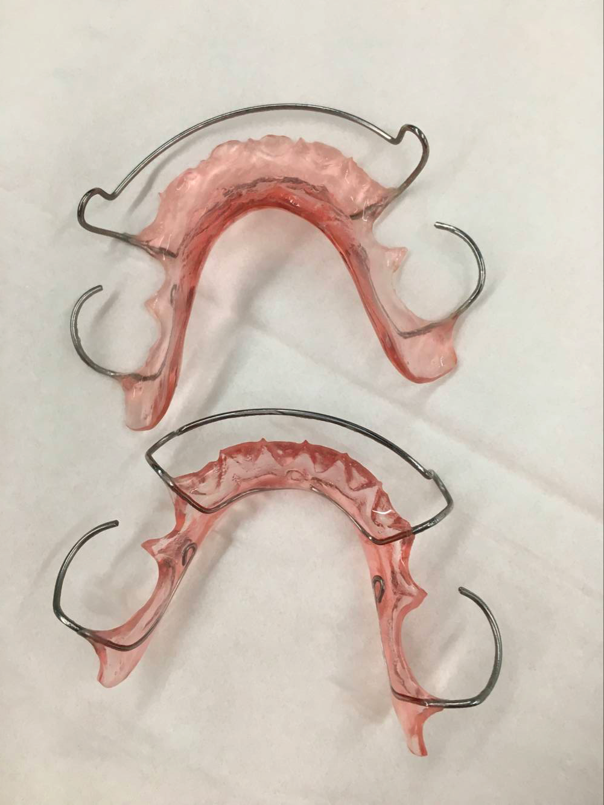--------------------------------------我是分割线(￣▽￣)~*--------------------------------------
2017.5.31，哈哈，评论里有小伙伴问我咋还不更新，端午节放假回来啦，去舟山枸杞岛玩了一趟，超级累，但是还是要来给你们更新一波，有没有很感动？另外，祝各位小伙伴明天六一快乐~哈哈~
评论里面问到的问题我在这里再统一答一下哈：
1、在哪家医院做的？费用多少？
坐标杭州，省口腔医院。整个矫正过程是15500，金属自锁的，另外洗牙，四次拔牙，补牙，取模，拍照，拍片，杂七杂八加起来也有四五千了吧，总的算下来也有两万了。
我那个时候矫正费用是可以分开付的，第一次交了七千，后来陆陆续续两千，三千，五千才交完的。现在医院政策好像是改了，要一次性付清，在此心疼一下要在省口腔医院矫正的小伙伴们，但是如果你们下定决心要去矫正了也不要心疼这点钱了，矫正后给你带来的自信不是一两万能买到的。（不是打广告，纯自我感受）
2、经常口腔溃疡怎么办？
1.保持口腔卫生，饭后刷牙，刷后用漱口水漱口。
2.早睡早起，保证睡眠充足，白天多喝水，多吃水果补充维生素，没办法这是个“富贵病”，工作狂模式不适合我们。
3.吃维生素b含片，每天两片。
4.要是已经长了口腔溃疡，以上三点照常做，外加喷西瓜霜，或者其他药，药店都有卖，总之内调外敷都要有。
这样口腔溃疡慢慢就会减少了，我以前也是经常口腔溃疡，此消彼长，现在好多了，就偶尔不注意休息会长。
（偷个懒，直接把评论里的回答搬过来啦，嘻嘻）
3、能不能吃硬的东西？
太硬的不能吃，大部分东西都是可以吃的，只不过都要切成小块吃。因为前面的牙齿不能用力，像鸡腿啊，螃蟹啊，苹果这些需要啃的东西都是吃不了的，除非切成小块。。我矫正期间，除了拔牙和复诊后的一个星期因为铁丝或者皮筋加力了，牙齿会痛，只能吃粥或者很软的东西，其他时间基本没啥影响，想吃啥只要弄成小块都是可以美美得吃~吃完刷牙！
现在摘完牙套，感觉牙齿比以前坚固多了，啃不是很硬的东西也没问题了，相信再过段时间会像以前一样的，大家也不用太担心。
4、关于脸型有没有变。
因为我有深覆合，需要戴平导矫正（不清楚的可以百度），所以脸会被拉长，但是也不是很明显，就是矫正的过程会比较痛苦一点。建议有深覆合的小伙伴还是去矫正一下吧，对你整个人的姿态都会有帮助的。我以前有点驼背的，现在感觉好多了（不知道是矫正了深覆合的原因还是最近在练舞蹈，总是没有那么驼背了）。整个人都会自信很多，走路再也不会低着头了。
在此贴一个回答：做过牙齿正畸的同学们，你们的脸型变了吗？ - 知乎
这里讲得比较专业，你们可以看看。
5、关于牙龈萎缩和黑三角问题。
这两个问题我感觉我还好，因为我本身牙齿突出不是特别严重，牙齿也没有七歪八斜的，所以这个问题不是很明显，至少我自己感觉不到。
像这类的问题知乎也有：牙齿矫正产生的牙龈萎缩黑三角问题真的是不可逆的吗？ - 知乎
6、关于我中线有没有对齐的问题。
我也不清楚，拍的片子上看是没有对齐的，但是我自己看镜子是对齐的，没有问题。我也不知道是什么原因，下次去医院的时候问一下。
放几张在舟山拍的照片吧(*￣∇￣*)
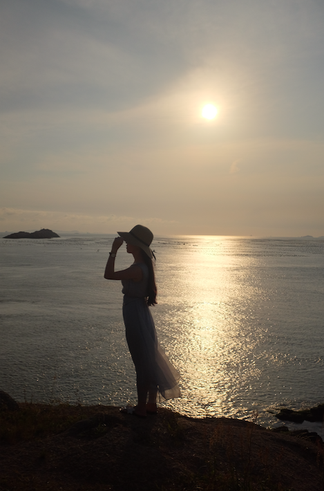侧面虽然没有像明星那样凹凸有致，但是嘴巴不突出来我就很满足了（以前侧脸照简直没法看）。
--------------------------------------更新也要分一下吧？--------------------------------------
以下是原答案：
2017年，5月18号（嗯，是个黄道吉日(*^__^*) ），我终于摘掉牙套啦啦啦~撒花~o(￣ε￣*)感觉整个人要飞起来了，嘴巴里面很光滑，一直在舔自己的牙齿，然后不停得自拍，哈哈~
下面来回忆一下我整个整牙的过程，这一路还算是顺利的，没有太多的坎坷，希望对你们正在矫正的同学有一点帮助。
注：篇幅有点长，没耐心看的童鞋可以直接看图和重点，都有加粗圈重点哦~
-------------------------------------------------分割线？-------------------------------------------
1、矫正前
先介绍一下我的牙齿情况，我的上牙是有点龅牙的，用我妈的话来说就是有点往外飘，（是的，我的牙齿是遗传了我妈的，我今天拆了牙套把照片发给她看，她忧伤得说了一句，女儿你现在不像妈妈了，像你爸了，我哈哈哈。。。） 然后其中门牙是歪的。如图：
正面看不太出来，侧面看很丑，整个嘴巴是突出来的，我找不到图了，在网上找一个差不多的吧，大概是这个样子的。如图：
简直不忍直视。。。感谢我男友不嫌弃我。
早在高中的时候就想去整牙了，奈何家里老爸不同意，我本身意愿也不是很强，就一直拖着没去弄，后来上了大学发现越明显啦，毕业后感觉这牙齿严重影响了我的自信心，都不敢张嘴大笑，就算笑也要用手捂住嘴巴。嗯，有点假矜持╮(￣▽￣)╭
2、第一次去口腔医院
终于，在2015年12月（具体几号忘了），我鼓起好大的勇气，怀揣着忐忑的心情在男友的陪同下去了所在市的省口腔医院，挂了一个专家号。一个主治医生，n个实习医生围着我的嘴巴看，看完医生说我这个情况要拔四颗牙齿，上面两颗，下面两颗，而且我因为长期用一边牙齿吃东西，脸型都有点歪了，笑起来嘴巴也是歪的，如果整完了嘴巴会更歪，让我再考虑一下。。我当时有点吓到了，就走出来和男友商量，其实也不是商量，还是要我自己来决定，但是多少还是希望能听到一些他的建议，然而他每次都是说看你自己咯（估计很多男友都这样，没办法），索性我就自己在那里纠结了一阵，最后还是决定矫正了，因为实在是心里一个疙瘩，不拿掉不甘心。。
对了，我这个时候已经快26周岁了，因为年龄也大了，担心矫正效果不是很好，所以就有了上面的鼓起勇气，忐忑的心情，纠结等。。
好了，决定了之后我就去找医生了，然后给我制定了一个方案，我选择的是成人金属自锁，总价15500（只是矫正的价格，不包括拍照、取模等），然后就开始拍照，取模。取模的时候有点难受，老是干呕，眼泪都掉下来，还好护士美眉很温柔，一直在旁边说用鼻子吸气，用嘴巴呼气，然后果然不干呕了。最后给我上面的牙齿分牙了，就是先把牙齿用钳子夹住，然后开始摇，等听到嘣的一声就是差不多了，然后把橡皮一样的东西塞到你牙齿的缝隙里面去，刚开始有点害怕也有点难受，但是你都已经决定了，再艰难都要走下去。
在这里提醒大家一句，在整个矫正过程中，你都要无条件信任你的医生，他是专业的，他让你怎么做你就怎么做，努力配合医生的治疗，你的矫正效果也会越好。
3、洗牙、拔牙、上牙套
医生让先去洗牙，我就去洗了，洗的时候牙齿很酸，不过忍一忍也就过去了，洗完好清爽，原来老是牙龈出血的地方也不出血了，建议最好每年都去洗一次牙，真的很不错。
后面就开始陆续拔牙了，先拔上面的牙齿，牙齿最好是一颗一颗拔（拔完一颗一个星期后再拔第二颗），不要太心急，不然会受不了的，麻药过后就算吃了止疼药也会疼。拔第一颗牙还算是比较顺利的，自己一个人去的，第一次有点紧张，当时就一直在心里默念：放轻松放轻松，要相信医生要相信医生。。拔牙前打麻药会有点疼，拔的时候不疼，就感觉牙齿是被连根拔起了，拔完四五十分钟后拿掉棉块，过一会儿血就止住了，但是麻药过后就开始疼了，基本不能吃东西，只能喝粥，然后慢慢三四天后会好点。第二颗是男友陪我去的，可能是心理作用还是怎么的？男友在身边就会柔弱一点？反正这次拔完棉块拿掉之后血一直没止住，后来又跑去医院两三趟，上午去拔的牙，到晚上基本都不能吃东西，只能喝牛奶，血是止住了，但是有很大的血块不能弄掉，只能等它自己慢慢化掉，所以，那个晚上很痛苦，嘴巴里全是血，就算是自己也血，也是难以下咽（医生说不能吐出来，我很听话的，然后都吞下去了，那一天我估计喝了一杯血的样子，生无可恋╭(╯^╰)╮）。。还好都过去了。。
后面就开始戴牙套了，先戴上颚的，戴的过程很漫长，大概有一个多小时，全程用工具把嘴巴撑开，很难受。戴上之后感觉牙齿会很酸很疼，牙套在里面很不习惯，经常会把嘴巴里面的肉肉磨破，磨破就变成口腔溃疡了，非常痛苦。这里推荐一个神器，也是朋友推荐给我的，再次对他表示感谢，某宝搜正畸保护腊，揉软了贴在会磨到你的金属贴片上，就不磨口腔了，刚戴上牙套的可以用，我一个同事刚戴，我就推荐给她了，她特别感谢我，哈哈。。戴上牙套后基本啥都咬不动，只能喝粥，可以在粥里面放点肉和蔬菜。这样要持续一个星期的样子，之后吃东西也不能吃太硬的，而且前面的牙齿基本上不能用，也就是不能做啃这个动作，后面牙齿也不能咬太硬的东西，吃东西基本只能吃小块的，吃完东西就要刷牙，出门最好是带个便捷式牙膏牙刷筒，有条件的话最好是刷完牙就用漱口水漱口，一方面清洁口腔，另一方面预防牙菌斑的生成以免牙龈肿痛之类的，会影响矫正。过程很辛苦，但是看着牙齿慢慢开始变正了还是很开心的。
2016年1月4号，上颚牙齿刚戴上牙套的样子：
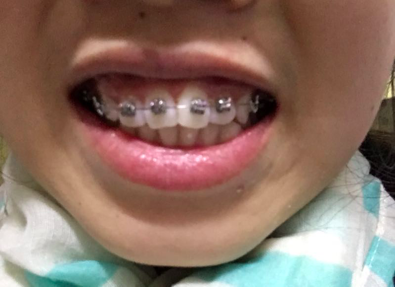过一个月之后去复诊，复诊的时候给铁丝加力，然后又重复得疼一个星期左右，我说它跟大姨妈一样，每个月一次，每次持续一个星期，哈哈~(￣▽￣) 然后就是一个漫长的等待过程。
直到2016年4月11号，我下颚的牙套才戴上，1月到4月期间去拔了下面的两颗牙齿，下面是我下颚戴上牙套的样子：
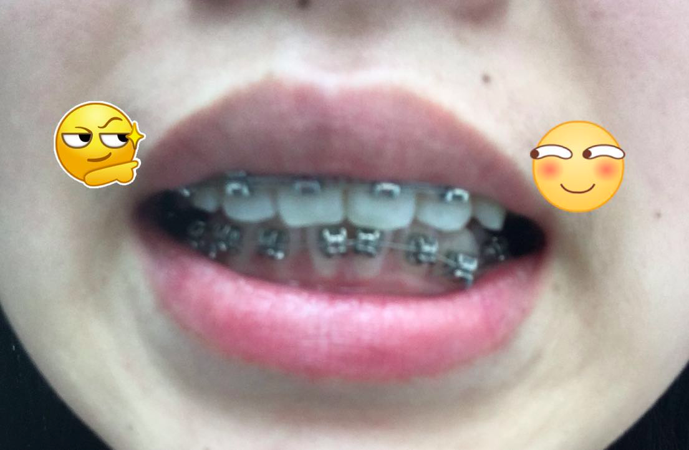这个时候上面的牙齿已经开始慢慢往里收了一点了，不是很明显，但是门牙能看出来正了很多。对了，我下面的牙齿也是参差不齐的，这是我下颚拔完牙齿之后的状态：
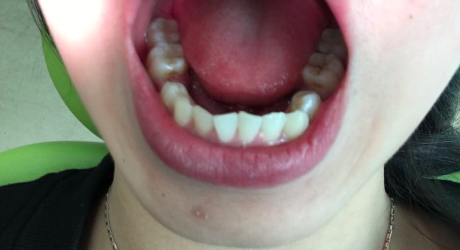上下颚都戴上牙套之后就是一个漫长的等待时间了，还是每个月去一次，还是每次都要痛一个星期左右。
4、戴平导（2016年7月中旬）
因为我是深覆合，需要戴平导把深覆合打开，抬高牙床。这是非常痛苦的一个阶段，戴上之后非常非常不习惯，说话大舌头，脸颊两侧被拉得很酸，脸也被拉得很长，嘴巴都闭不上，拍照很难看，吃饭睡觉都要戴着不能拿下来，刚戴上的一个月，吃饭的时候后面的牙齿根本碰不到一起，所以吃东西基本靠吞！！你没看错，就是靠吞！！可怜了我的胃啊。。那段时间真的太痛苦了，还好都过来了。。
5、收牙缝
收牙缝是牙齿正了之后一直都在收的（主要靠皮筋，每个月去换一次皮筋），到九月份的时候上面被拔牙齿的地方已经收了一半了，前面的牙齿在往后移，嘴巴感觉也已经没那么突出了，后牙床也慢慢抬高了，后面牙齿能咬合了，吃饭也没那么费劲了，但是平导还是要继续戴，我带了有三四个月的样子。下面放一张九月1号的照片：
之后又是一个漫长的等待过程。。
终于在2016年11月份的时候平导摘了，迫不及待给自己来个正面和侧面照，这个时候脸还是被拉得很长，嘴巴还是闭不拢，但是没有之前那么突出了，感觉终于有点效果了。
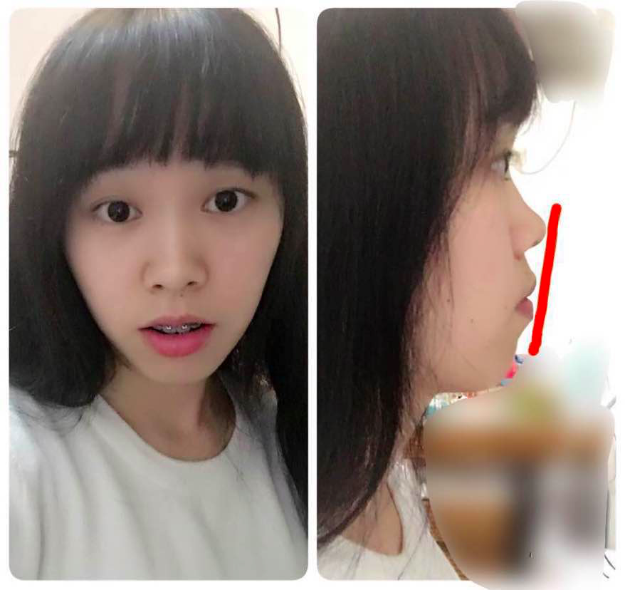从侧脸可以看到，鼻子和下巴还没有在一条线上，革命尚未完成，同志仍需努力。
然后又是一个漫长的等待过程，不过还好，其实平时大可不必太在意，越在意越觉得它效果不明显，平时不怎么去看，好好刷牙，按时复诊，某天再去一看，它会给你惊喜的~
下面这张是2017年3月7号拍的，正脸图，可以看出来不笑的时候脸就感觉被拉得很长，嘴巴闭上更显长，所以一般都不闭嘴 (⊙ˍ⊙)
再放一张2017年3月21号拍的，笑起来更自然一点。油菜花开得正旺，果断来张合影，哈哈。
别问我在看哪，我也不知道。。。
然后就是2017年4月份去复诊，医生说我下个月就可以摘啦，我好开心吶，选了一个好日子，5月18号，518我要发啦啦啦，哈哈哈~
放一张四月份和男友的合照，感谢他的不离不弃(￣▽￣)~*拆完我们就去拍美美的婚纱照吧o(*≧▽≦)ツ
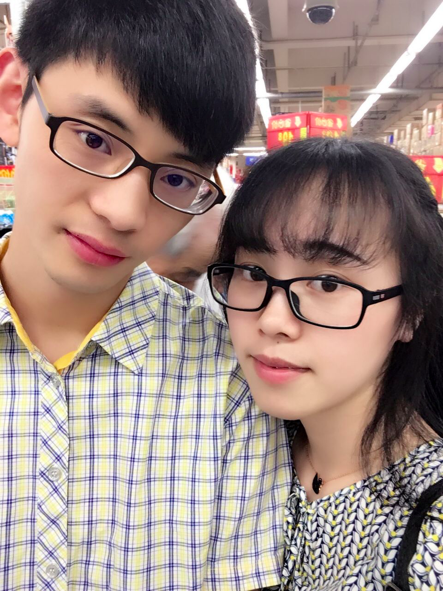6、拆牙套
2017年5月18号，这激动人心的时刻终于来到了，请了假早早得去了医院（之前医生说要一个上午的时间，要早点去）。主治医生看了点点头表示很满意，嗯，可以拆了。然后他的助理就让我躺着开始给我拆了（主治医生除了上牙套的时候动手，其他都是助理给我做的，做完再给主治医生看，因为是专家，来看诊的人太多了，一个人根本忙不过来），拆了大概有十五分钟左右吧，还是有点费劲的，医生一直换各种角度给我拆，心里一直在说辛苦医生了，辛苦医生了。。拆的时候我还担心会很痛，因为戴了一年半了，钢圈都跟牙龈连一起了，不过还好不痛，就是牙龈有点出血，拆完我就去刷牙了（每次去复诊前都要刷牙哦，最好是戴上你的便捷牙刷牙膏筒，有的时候换钢丝空隙你可以去刷个牙，回来再让医生帮你把钢丝上上去）。
刷完牙回来看见我的牙套还在手术器械盒子里，赶紧拍一张留念，毕竟陪伴了我一年半。
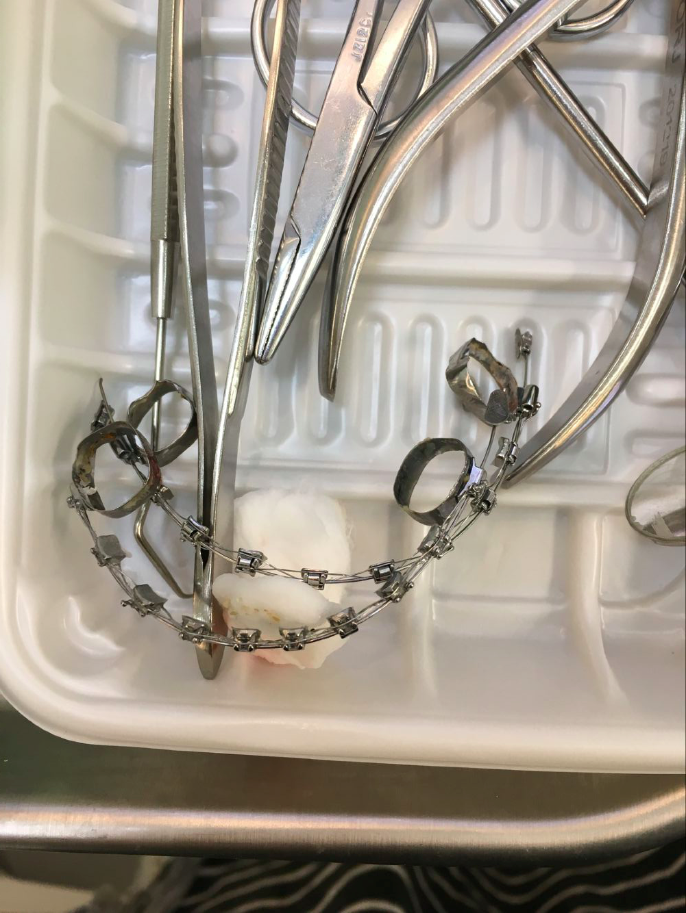这个时候牙齿上还有粘金属片的胶，牙齿还不是很光滑，不过看着舒服多啦，刷牙的时候忍不住多看了几眼，嘻嘻。。刷完牙然后就给我把牙齿上胶磨掉，然后抛光，OK！终于好了！忍不住舔牙齿，我舔我舔我舔舔舔~~哈哈，好光滑~虽然自己看不到还是要一直笑~然而在医院我得矜持点啊，不能一直这样笑，不然会被认为是个傻子吧，然后乖乖去完成后面的程序了，交费，拍照，拍片，取模。取完模就乖乖等保持器啦，肚子有点饿去买点东西吃，想体验下摘了牙套吃东西的感觉，终于可以不用吃完东西牙齿上还残留一半了（戴了牙套的都懂，说多了都是泪(╥╯^╰╥)）。吃完回医院刷个牙，然后就迫不及待拍照发给男友，发给我妈，发给好友。。。赶快告诉她们我终于摘牙套了啦啦啦~哈哈，是的，我快要疯了，原谅我这么不矜持╮(￣▽￣)╭最后给你们看看我摘完牙套在医院拍的照片：
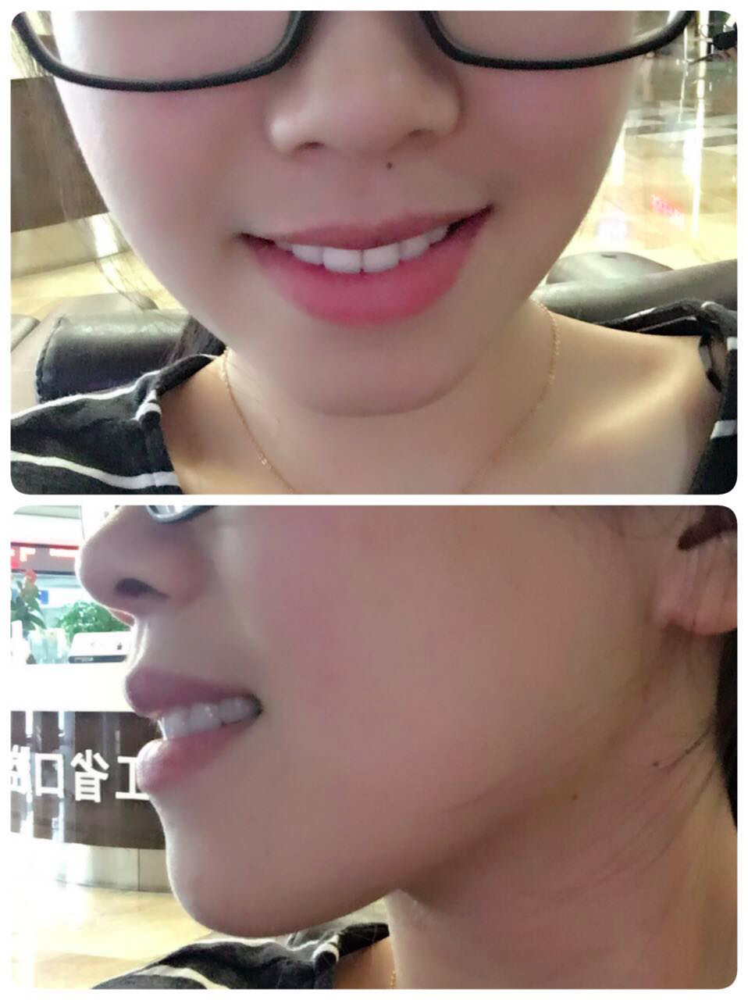侧面终于好看了~~太鸡冻了！！o(￣▽￣)ｄ
还有最后拍的片子，也给你们看看：
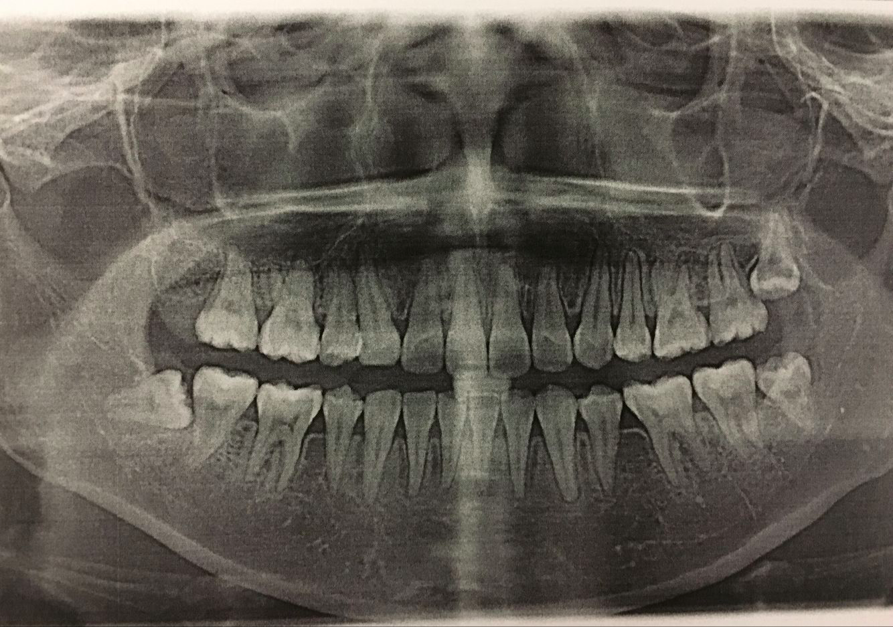有三颗智齿要拔，伤心。。
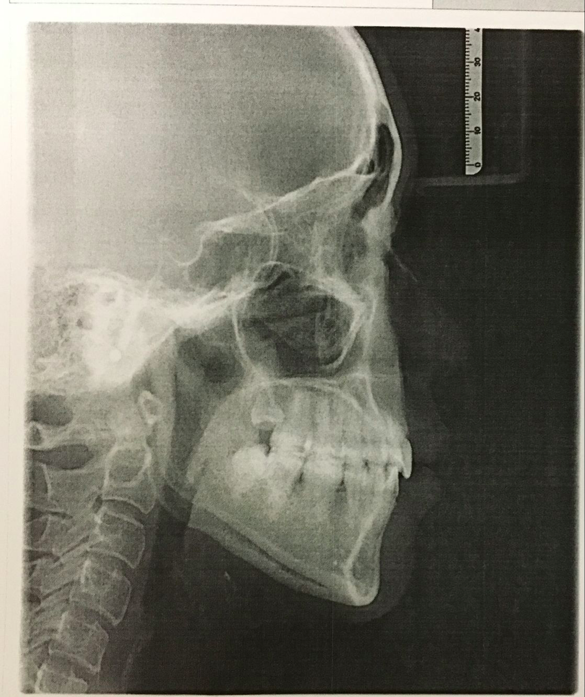鸡冻的心情刚平复了一点点，就叫我去拿保持器了，做出来还是挺快的嘛，就是这种透明的保持器：
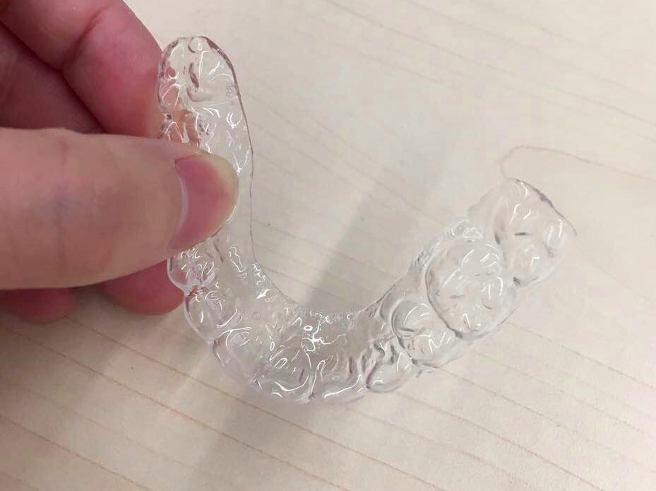医生说这个保持器要戴两个月，一个月后再去取一次模做铁丝的那种保持器，那个保持器要再等一个月去拿，所以我还是要每个月都要去医院？每次都要请假，啊，心好累。。我以为结束了呢。。。
不过这根本不能我阻挡摘了牙套的兴奋，戴上保持器开车去上班，一路心情棒棒哒~(^o^)
好了，到这里我的矫正过程就算告一段落啦，后续再更~
感谢亲爱的们耐心看完，祝正在矫正和准备矫正的你们都有一口整齐的牙，期待你们的华丽蜕变~献上飞吻~ (●´З｀●)
另外正在犹豫的童鞋也别担心，想矫正就不要纠结啦，越早越好，我还是很感谢我当时的决定的。